Documentación · versión 2.0.0
AgentBoard, de punta a punta
Todo lo que hace la app y cómo lo hace: qué lee de cada agente, qué muestra cada apartado, con qué fórmulas calcula el coste, cómo vigila los logs en vivo, qué guarda en disco, cuánto tarda y cómo consultarlo desde otro agente con el servidor MCP.
Empezar
Qué es AgentBoard
Una app de escritorio que reúne en un panel el coste y la actividad de tus agentes de código: Claude Code, Codex, GitHub Copilot CLI, Cursor CLI, Gemini CLI y OpenCode. Lee los logs que esos agentes ya guardan en tu ordenador, los cruza y responde cuánto llevas gastado, qué modelo te sale más caro y en qué se va el tiempo del agente.
-
Local y privado
Sin proxy, sin claves de API y sin telemetría. Nada sale de tu equipo.
-
Solo lectura
Lee los logs que ya existen; no toca ni interfiere con el trabajo de los agentes.
-
En vivo
Lo que escribe un agente aparece en menos de medio segundo, con 0 % de CPU en reposo.
-
Para otros agentes
Un servidor MCP deja que un agente consulte estos datos en mitad de una conversación.
Para qué sirve
- Controlar el gasto: coste del día y del mes, proyección a fin de mes y aviso al acercarte al presupuesto.
- Entender el uso: qué agente y qué modelo usas más, y con qué aprovechamiento de la caché.
- Ver en qué trabajas: reparto por actividad (coding, testing, debugging…), por proyecto y por rama de git.
- Detectar fricción: qué herramientas, comandos y servidores MCP fallan más.
- Preguntárselo a tu agente gracias al servidor MCP incluido.
Funciona en Linux, Windows y macOS con un único binario nativo, en español, inglés, portugués y francés.
Empezar
Instalación
Descarga el instalador de tu sistema desde la última versión publicada. Todos incluyen la app y el servidor MCP.
| Sistema | Archivos |
|---|---|
| Linux x86_64 | AgentBoard-App_<v>_linux_x86_64.AppImage, .deb o .rpm |
| Windows x64 | AgentBoard-App_<v>_windows_x64-setup.exe o _windows_x64.msi |
| macOS universal | AgentBoard-App_<v>_macos_universal.dmg (Intel y Apple Silicon) |
| Solo el MCP | AgentBoard-MCP_<v>_linux_x86_64, _windows_x64.exe o _macos_universal |
Linux
- .deb / .rpm:
sudo apt install ./archivo.debosudo dnf install ./archivo.rpm. La app queda en el menú y el MCP en/usr/bin/agentboard-mcp. - AppImage: no se instala; dale permiso de ejecución y ábrelo. Es la mejor opción en distribuciones inmutables (Bazzite, Silverblue…).
- Requiere WebKitGTK 4.1, presente en cualquier escritorio moderno.
chmod +x AgentBoard-App_*_linux_*.AppImage
./AgentBoard-App_*_linux_*.AppImage
Si tu sistema no tiene FUSE, lánzalo con APPIMAGE_EXTRACT_AND_RUN=1, o
extráelo con --appimage-extract y ejecuta squashfs-root/AppRun.
El AppImage publicado ya viene corregido para que la ventana no salga en blanco con Mesa
reciente (Fedora, Bazzite, Arch).
Windows y macOS
Binarios sin firmar
La primera vez el sistema pedirá confirmación. En Windows: SmartScreen → «Más información» → «Ejecutar de todas formas». En macOS: clic derecho sobre la app → «Abrir».
Actualizar y desinstalar
Para actualizar, instala la versión nueva encima o sustituye el AppImage. Para desinstalar, quítala con el gestor de tu sistema; si no quieres dejar rastro, borra también la carpeta de ajustes y la de la caché (ver Caché y datos).
Empezar
Primeros pasos
-
Ábrela
Detecta sola los agentes instalados y lee sus logs. La primera vez lee todo el historial y crea la caché; las siguientes solo lee lo nuevo y arranca al instante.
-
Elige el periodo
Hoy, 7, 30, 60 o 90 días, o todo (por defecto, 30 días). Si quieres, filtra por agente o proyecto.
-
Mira el Resumen
Coste, sesiones, cache hit, ahorro por caché, burn rate y gasto del mes, cada uno con su variación frente al periodo anterior.
-
Baja al detalle
Entra en un apartado desde el panel lateral o con Ctrl K para ver su tabla, sus gráficos y su vista ampliada.
-
Pon tus presupuestos
En Precios y presupuestos, para recibir avisos al 80 % y al 100 %.
-
Déjala en la bandeja
Al cerrar la ventana sigue funcionando en segundo plano. Para salir del todo, «Salir» en el menú de la bandeja.
Empezar
Agentes compatibles
Un agente aparece si está instalado (su ejecutable está en el PATH o existe su
carpeta), aunque todavía no tenga sesiones. Sus datos salen en cuanto existan.
| Agente | Dónde lee | Variable |
|---|---|---|
| Claude Code | ~/.claude/projects/**/*.jsonl | $CLAUDE_CONFIG_DIR |
| Codex CLI | ~/.codex/sessions y archived_sessions, archivos rollout-*.jsonl | $CODEX_HOME |
| GitHub Copilot CLI | ~/.copilot/session-state/*/events.jsonl | $COPILOT_HOME |
| Cursor CLI | ~/.cursor/projects/*/agent-transcripts/*/*.jsonl | — |
| Gemini CLI | ~/.gemini/tmp/*/chats/session-*.jsonl | $GEMINI_CLI_HOME (añade .gemini) |
| OpenCode | Su base SQLite opencode.db, en solo lectura | — |
Los nombres de herramientas de cada agente se traducen a unos comunes (Bash,
Read, Edit, Write, Grep,
Agent…) para poder compararlos. Los nombres de modelo también se normalizan:
minúsculas, sin prefijo de proveedor, sin sufijos como [1m] o una fecha, y con
los puntos de Claude convertidos en guiones (claude-opus-4.7 →
claude-opus-4-7).
Particularidades de cada agente
- Claude Code
- El proyecto es el primer directorio de trabajo de la sesión. Cuenta tokens de entrada, salida, lectura y escritura de caché (separando la de 1 hora) y razonamiento. Los turnos se agrupan por prompt, los subagentes se enlazan a su sesión y detecta compactaciones e interrupciones.
- Codex CLI
- Su entrada incluye la caché, así que AgentBoard resta lo cacheado para no contarlo dos veces. Soporta el formato nuevo y el antiguo, detecta subagentes y compactaciones, y convierte sus herramientas MCP a
mcp__servidor__herramienta. - GitHub Copilot CLI
- Solo da la salida de cada respuesta; la entrada y la caché llegan sumadas por modelo al cerrar la sesión. AgentBoard reparte ese total a partes iguales entre las respuestas de ese modelo. Sus subagentes cuentan como herramienta, no como llamadas de subagente.
- Cursor CLI
- No registra tokens ni modelo: los tokens se estiman (4 caracteres ≈ 1 token, como salida) y el modelo queda como
cursor-auto, sin precio, así que cuesta $0. La hora sale de la fecha del archivo o de la que trae el prompt, y el proyecto se deduce del nombre de la carpeta. - Gemini CLI
- El proyecto sale de sus metadatos o de
~/.gemini/projects.json. El razonamiento («thoughts») se suma a la salida. También lee el formato antiguo de un único.json. - OpenCode
- Lee su base de datos en solo lectura, de forma incremental. Si trae su propio coste, se usa cuando el modelo no tiene precio. Sus herramientas MCP se reconocen con la configuración de
~/.config/opencode/opencode.json(c).
Los proyectos se nombran por la última carpeta de su ruta. Los worktrees que crea Claude
Code (…/.claude/worktrees/…) se agrupan con su repositorio.
Usar la app
El Resumen

Los seis KPI
| KPI | Qué muestra |
|---|---|
| Coste | USD del periodo y número de llamadas |
| Sesiones | Número de sesiones y coste por sesión |
| Cache hit | Porcentaje de entrada servida desde caché, con tokens leídos y escritos; la variación va en puntos |
| Ahorro por caché | Lo que habría costado esa entrada a precio normal |
| Burn rate | Gasto de los últimos 60 minutos, en USD/hora |
| Gasto del mes | Lo gastado y la proyección a fin de mes; con presupuesto, el porcentaje usado y si lo superará |
Cada KPI muestra su variación: «▲ 18 %», «▼ 4 %», «= 0 %» si cambia menos de medio punto, o «nuevo» si antes era cero. Si la proyección supera el presupuesto mensual aparece un aviso bajo los KPI.
Gasto diario
Columnas apiladas por agente, con el total de cada uno en la leyenda y la línea discontinua del periodo anterior. Con «Hoy» pasa a 24 barras por hora, y si el rango supera 400 días se agrupa por meses.
Hoy en directo
- Siempre muestra hoy, sea cual sea el periodo (respeta los filtros de agente y proyecto).
- Gasto desde las 00:00 y su variación frente a ayer a la misma hora.
- Ritmo de la última hora en $/h y gasto por hora del día.
- «Activa ahora» si una sesión tuvo actividad en los últimos 15 minutos; si no, «Última sesión · hace X». Un clic abre su detalle.
- Se refresca con cada dato nuevo y cada 30 segundos, solo si la ventana está visible.
Los tres paneles inferiores
- Top proyectos (o top ramas, si filtras un solo proyecto): seis filas con coste, variación y barra.
- Top modelos, con un aviso si hay modelos sin precio y un enlace para completarlos.
- En qué se va el gasto: reparto por actividad y la tasa 1-shot global.
Usar la app
Los apartados
Cada apartado tiene tres KPI, una tabla ordenable por cualquier columna, gráficos y un botón «‹ Volver al resumen». Los gráficos de ranking y evolución dejan elegir la métrica y agrupan lo que no cabe en «Otros». Las tablas de más de 200 filas solo dibujan lo que se ve.
| Apartado | KPI | Tabla y gráficos |
|---|---|---|
| Daily Activity | Coste del periodo, media por día activo, día más caro | Una fila por día con coste, llamadas, sesiones, entrada, salida y cache hit. Gráfico por coste, llamadas o tokens de salida, total o por agente o actividad; acumulado del periodo; gasto por hora del día con la hora pico. |
| By Agent | Coste, llamadas, agente principal | Coste, llamadas, sesiones, $/sesión y cache hit por agente; reparto, ranking y evolución. |
| By Project | Coste, sesiones, proyecto principal | Coste, $/sesión, sesiones, llamadas y overhead de contexto por proyecto. Con un solo proyecto filtrado se convierte en By Branch. |
| By Model | Coste, llamadas, modelo principal | Coste, llamadas, sesiones, cache hit y 1-shot por modelo. |
| By Activity | Coste y $/turno, 1-shot global, actividad principal | Coste, turnos, $/turno, turnos con edición y 1-shot por actividad; evolución y 1-shot por actividad. |
| Tools | Llamadas, % con error, más usada | Usos, errores y % de error de cada herramienta nativa (sin las MCP), hasta 50. Más del 5 % de error se marca. |
| Shell Commands | Igual que Tools | El programa de cada comando (separando |, &&, ;…, sin sudo, env, timeout ni variables), hasta 50. |
| Skills & Agents | Coste, número, el más caro | Skills y subagentes invocados, con usos, coste de la respuesta que los lanzó y $/uso. |
| MCP Servers | Igual que Tools | Uso y errores por servidor MCP. |
| Agent Types | Igual que Skills | Lo que gastan los subagentes por agente y tipo («general-purpose», «Explore»…). |
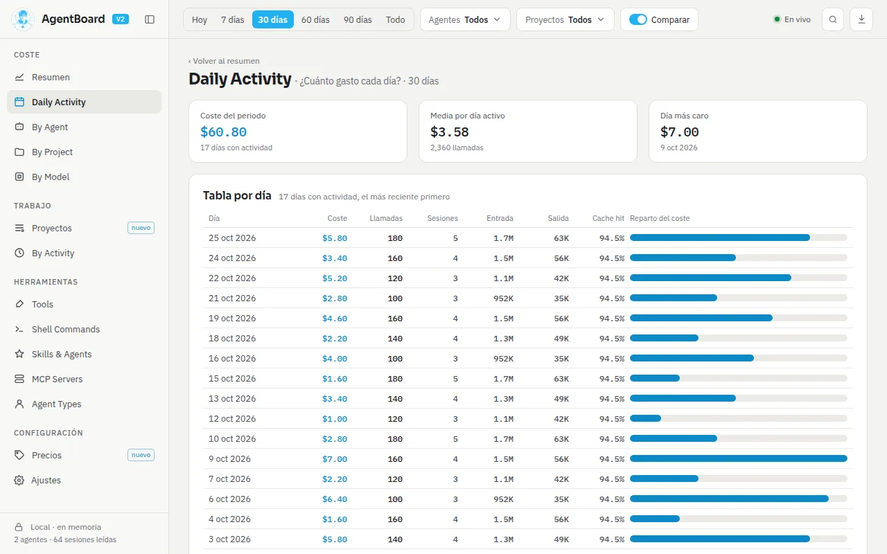
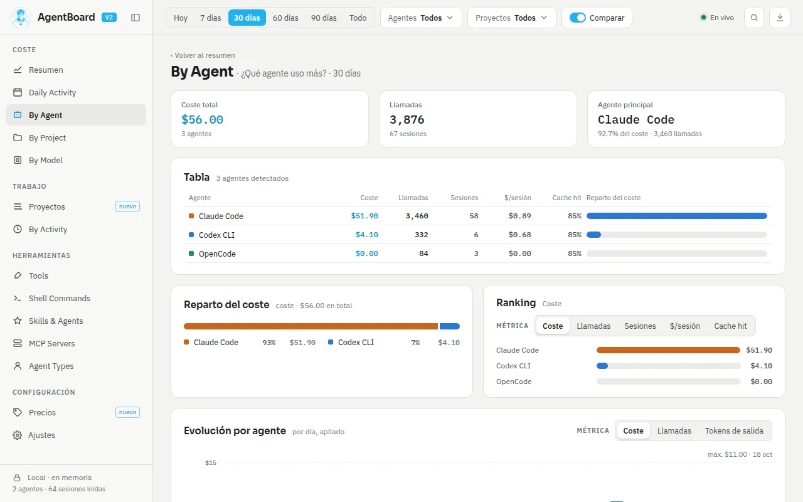
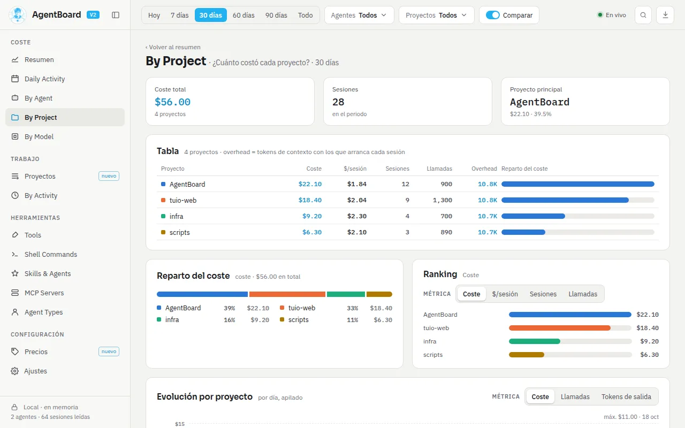
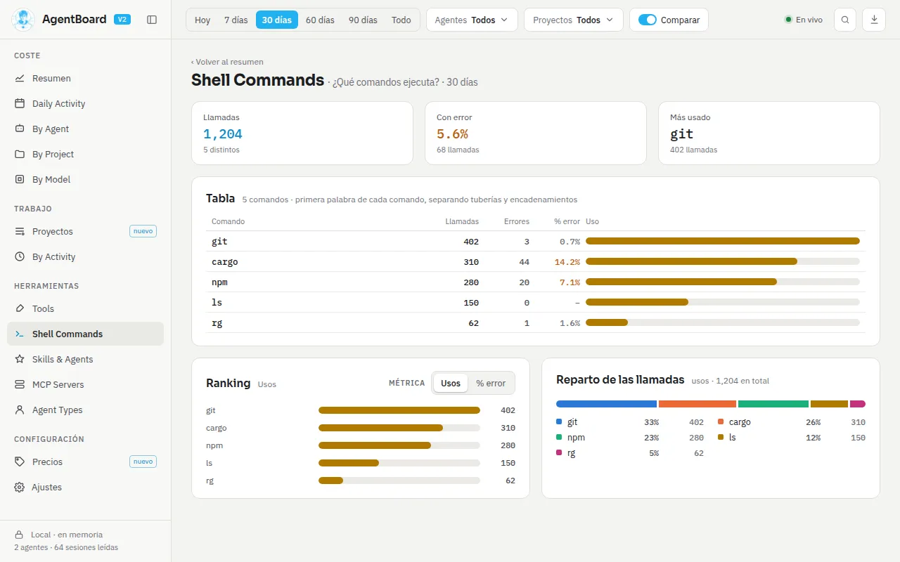
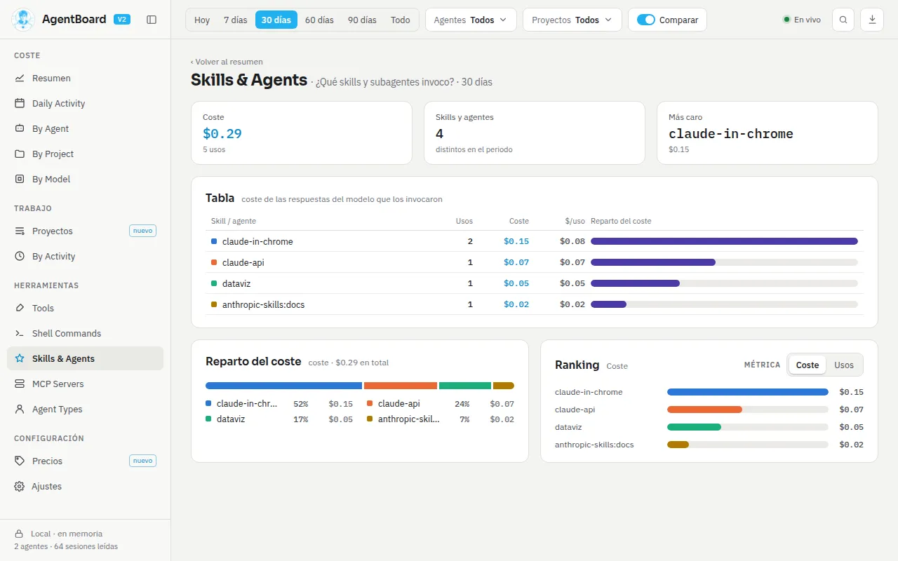
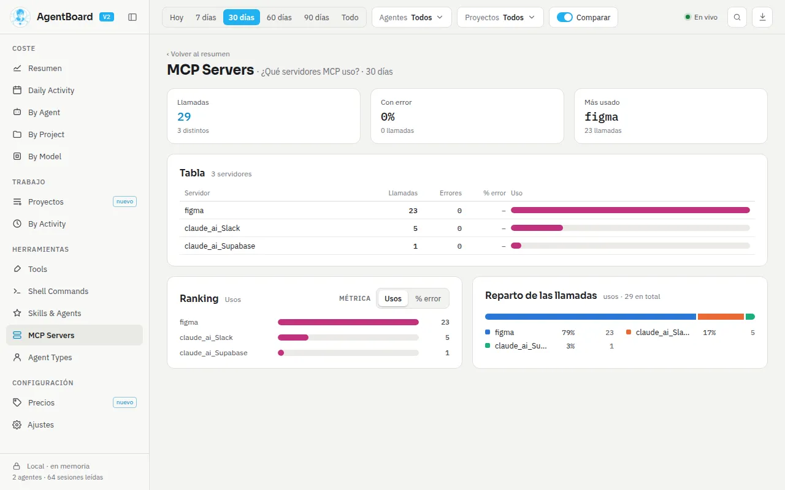
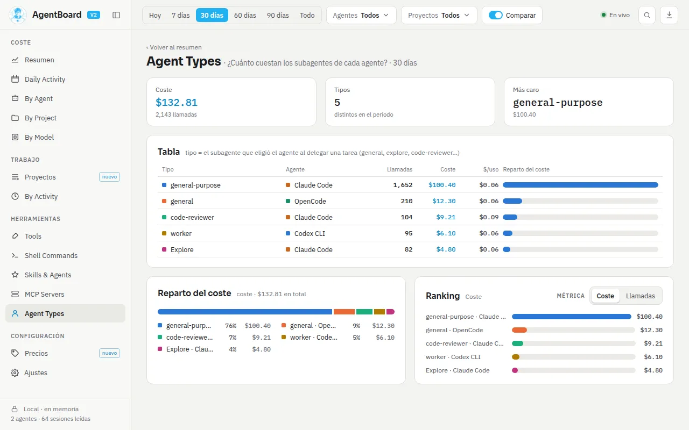
Usar la app
Proyectos y sesiones
Listado de proyectos
- KPI: coste medio por proyecto, el más caro y su porcentaje, tiempo activo total y cuántos tienen compactaciones.
- Buscador por proyecto, ruta, rama, modelo o agente.
- Vistas rápidas: Todos, Más caros (el 25 % superior), Con compactación y Con subagentes.
- Columnas: proyecto, agentes, ramas, modelo principal, sesiones, tiempo activo, turnos, compactaciones, caché y coste.
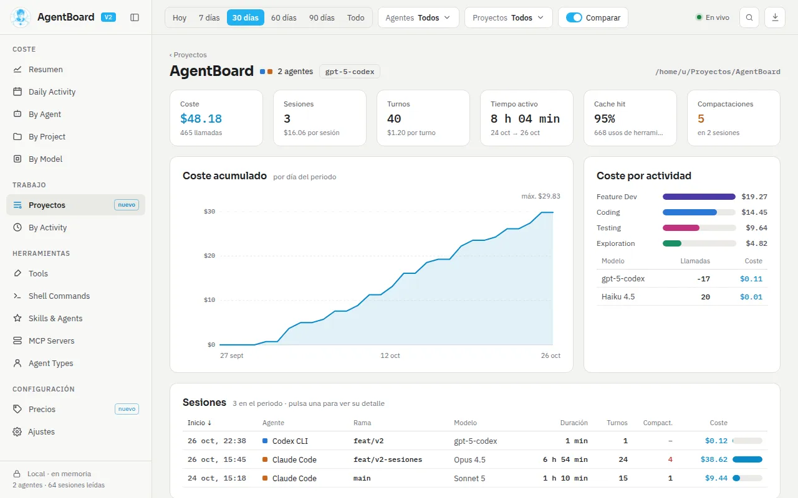
Detalle de un proyecto
- KPI: coste, sesiones ($/sesión), turnos ($/turno), tiempo activo, cache hit y compactaciones (marcado a partir de 3).
- Coste acumulado por día, coste por actividad y por modelo.
- Sesiones de 25 en 25, ordenables por inicio, agente, rama, modelo, duración, turnos, compactaciones o coste.
- Ramas, y herramientas con su latencia típica (p50) y lenta (p95).
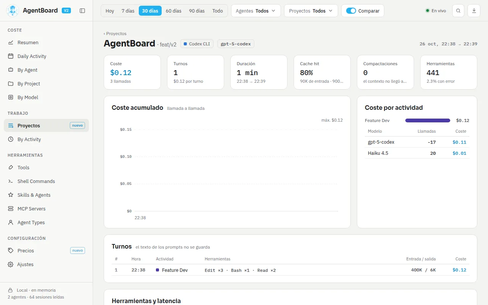
Detalle de una sesión
- Muestra la sesión entera, sin recortar por el periodo elegido.
- KPI: coste, turnos, duración, cache hit, compactaciones (con su hora) y herramientas con su porcentaje de error.
- Coste acumulado llamada a llamada, con las compactaciones marcadas en rojo.
- Si tras una compactación cada turno cuesta al menos 1,2 veces más, lo avisa: «Tras la 3.ª compactación, cada turno cuesta X× más».
- Turnos de 30 en 30: hora, actividad, las tres herramientas más usadas, entrada y salida, y coste. El texto del prompt no se guarda.
- Latencia por herramienta.
Usar la app
Precios y presupuestos
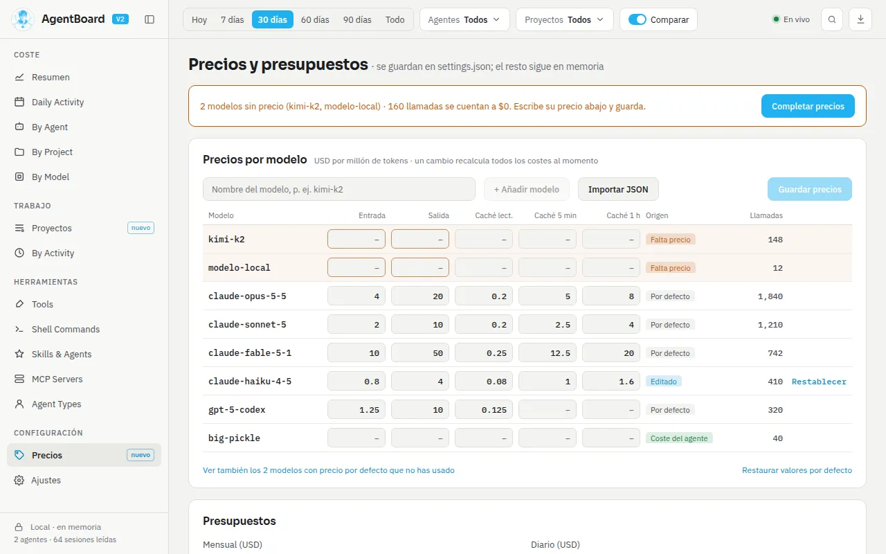
Precios por modelo
- Cinco precios por modelo, en USD por millón de tokens: entrada, salida, lectura de caché, escritura de caché de 5 minutos y de 1 hora.
- Cada precio indica su origen: Por defecto, Editado, Coste del agente, Falta precio o Sin guardar.
- Un cambio recalcula al momento todos los costes, en la app y en el servidor MCP, sin volver a leer los logs.
- Los modelos sin precio cuentan como $0 y se avisan con «Completar precios», que te lleva al primer campo vacío.
- Puedes añadir un modelo por nombre, descartar o restablecer cada uno, o restaurar todos los valores por defecto.
- Se aceptan números con coma decimal; un campo vacío cuenta como 0.
Importar JSON
Carga los precios como borrador para revisarlos antes de guardar. Acepta una lista o un objeto por modelo:
[{ "model": "kimi-k2", "input": 0.6, "output": 2.5, "cacheRead": 0.15 }]
{ "kimi-k2": { "input": 0.6, "output": 2.5, "cacheWrite": 0, "cacheWrite1h": 0 } }Presupuestos
- Mensual y diario, en USD, con su barra de progreso (naranja desde el 80 %, roja desde el 100 %). El mensual se compara con la proyección del mes; el diario, con lo gastado hoy.
- Por proyecto o por agente, en USD al mes, comparados también con su proyección.
- Opciones: «Notificar al llegar al 80 %», «Notificar al superar el 100 %» y «Mostrar el gasto de hoy en la bandeja».
Los precios editados y los presupuestos se guardan en settings.json.
Usar la app
Ajustes
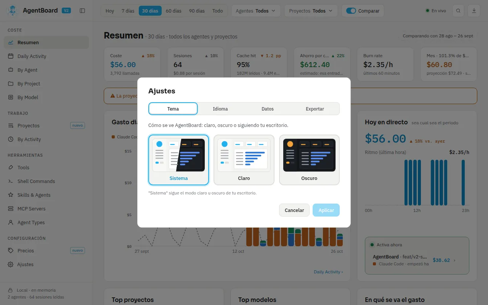
- Tema
- Sistema, Claro u Oscuro. El oscuro usa acento ámbar y el claro, azul.
- Idioma
- Sistema, Español, English, Português o Français. «Sistema» elige español, portugués o francés si es el idioma del sistema, y si no, inglés.
- Datos
- «Solo memoria» (no guarda caché en disco y la borra) y «Reconstruir caché» (borra los datos guardados y relee todos los logs). Ambas se aplican sin reiniciar.
- Exportar
- Las llamadas del filtro actual en CSV o JSON.
Los ajustes se guardan en settings.json:
| Sistema | Carpeta |
|---|---|
| Linux | ~/.config/agentboard/ |
| macOS | ~/Library/Application Support/agentboard/ |
| Windows | %APPDATA%\agentboard\ |
Usar la app
Bandeja, avisos y atajos
Bandeja del sistema
- Tooltip: «AgentBoard — este mes: $X (proyección $Y)», y el gasto de hoy si lo activas.
- Menú: la línea «Hoy: $X», Panel de hoy, Mostrar AgentBoard y Salir.
- Un clic en el icono abre el panel de hoy (en algunos escritorios Linux solo desde el menú).
- Al cerrar la ventana la app sigue en segundo plano y mantiene los datos al día.
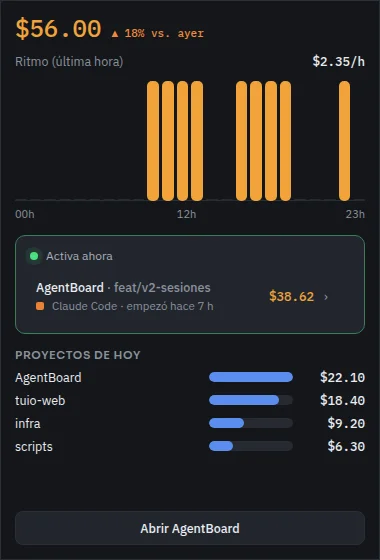
El panel de hoy es una ventana pequeña que se abre junto al cursor (en Wayland, arriba a la derecha) y se oculta al perder el foco. Muestra «Hoy en directo», los cinco proyectos con más gasto hoy y un botón «Abrir AgentBoard».
Notificaciones
Avisos nativos del sistema: «Cerca del presupuesto» al 80 % y «Presupuesto superado» al 100 %. Ver Avisos de presupuesto.
Buscador Ctrl K
Ctrl K (o ⌘ K) abre un buscador para saltar a cualquier apartado o a Ajustes, dejar solo un proyecto en el filtro o abrir una de las 30 sesiones más recientes.
Adaptable
La interfaz funciona desde 600 px de ancho y el panel lateral se pliega.
Cómo calcula
Métricas y fórmulas
- Coste de una llamada
- (entrada × Pentrada + salida × Psalida + lectura de caché × Plectura + escritura de 5 min × P5 min + escritura de 1 h × P1 h) ÷ 1 000 000, con el precio vigente en la fecha de la llamada. Si el modelo no tiene precio se usa el coste que informe el agente, y si tampoco hay, 0.
- Cache hit
- Lectura de caché ÷ (entrada + lectura de caché + escritura de caché).
- Ahorro por caché
- Lectura de caché × (Pentrada − Plectura) ÷ 1 000 000.
- Burn rate
- Coste de las llamadas de los últimos 60 minutos, con tus filtros de agente y proyecto pero sin el de periodo. Al abarcar una hora, ya está en USD/hora.
- Proyección del mes
- Gastado este mes ÷ día del mes × días del mes, contando hoy como día completo.
- Overhead de contexto
- Media de los tokens de la primera llamada de cada sesión: lo que cuesta arrancar con el contexto del proyecto.
- Turno
- Un prompt tuyo y todo lo que hace el agente hasta el siguiente. Los subagentes no abren turnos.
- 1-shot
- Un turno con ediciones es 1-shot si ninguna edición falla y ningún archivo se edita dos veces. La tasa es turnos 1-shot ÷ turnos con edición; por modelo se usa el modelo con más llamadas del turno.
- Sesiones
- Sesiones distintas, sin contar las de subagentes.
- Compactaciones
- Las registran Claude Code, Codex y Copilot. Cursor, Gemini y OpenCode no las informan.
- Latencia
- Tiempo entre el uso de una herramienta y su resultado; se resume con los percentiles 50 y 95.
Cómo calcula
Clasificación de actividades
Cada turno recibe una actividad según las herramientas que usó. Para algunas se mira también la intención del prompt, detectada con palabras clave en español e inglés («arregla», «fix», «añade», «implement», «qué te parece»…). Solo se guarda la etiqueta, nunca el texto. Se aplica la primera regla que se cumpla:
| # | Si el turno… | Actividad |
|---|---|---|
| 1 | Edita archivos y el prompt pide arreglar algo | Debugging |
| 1 | Edita archivos y el prompt pide algo nuevo | Feature Dev |
| 1 | Edita archivos en otro caso | Coding |
| 2 | Ejecuta tests (test, pytest, jest, vitest, mocha, rspec, cargo t, go t) | Testing |
| 3 | Compila o despliega (build, deploy, docker, podman, kubectl, terraform, make, gradle, mvn, npm ci, pip install…) | Build/Deploy |
| 4 | Solo usa git o gh | Git |
| 5 | Delega en un subagente | Delegation |
| 6 | Usa cualquier otra herramienta | Exploration |
| 7 | No usa herramientas y el prompt pide ideas | Brainstorming |
| 7 | No usa herramientas en otro caso | Conversation |
Las llamadas de agentes que no registran turnos se clasifican por la herramienta: edición (Coding), shell (Testing o Shell), lectura y búsqueda (Exploration), web (Research), delegación (Delegation) u otra (General).

Cómo calcula
Precios por defecto
USD por millón de tokens. Los de Claude y OpenAI salen de sus tablas oficiales (revisadas el 9 de octubre de 2026); los de Gemini son aproximados. No se modelan los recargos por contexto largo. Tus precios editados sustituyen a estos para todas las fechas.
| Modelo | Entrada | Salida | Lect. caché | Escr. 5 min | Escr. 1 h |
|---|---|---|---|---|---|
| claude-fable-5-1, claude-mythos-5-1 | 10 | 50 | 0,25 | 12,5 | 20 |
| claude-fable-5, claude-mythos-5 | 10 | 50 | 1 | 12,5 | 20 |
| claude-opus-5-5 | 4 | 20 | 0,20 | 5 | 8 |
| claude-opus-5, -4-8, -4-7, -4-6, -4-5 | 5 | 25 | 0,5 | 6,25 | 10 |
| claude-opus-4-1, claude-opus-4 | 15 | 75 | 1,5 | 18,75 | 30 |
| claude-sonnet-5-5 | 2 | 10 | 0,1 | 2,5 | 4 |
| claude-sonnet-5 | 2 | 10 | 0,2 | 2,5 | 4 |
| claude-sonnet-4-6, -4-5, -4 | 3 | 15 | 0,3 | 3,75 | 6 |
| claude-haiku-5-5 | 0,10 | 0,50 | 0,01 | 0,125 | 0,20 |
| claude-haiku-4-5 | 1 | 5 | 0,1 | 1,25 | 2 |
| claude-3-5-haiku | 0,8 | 4 | 0,08 | 1 | 1,6 |
| gpt-6-astra | 10 | 50 | 1 | 12,5 | — |
| gpt-6.1-sol | 2 | 10 | 0,10 | 2,5 | — |
| gpt-6-sol | 2 | 10 | 0,2 | 2,5 | — |
| gpt-6-luna | 0,10 | 0,50 | 0,01 | 0,125 | — |
| gpt-5.6-sol | 4 | 20 | 0,40 | 5 | — |
| gpt-5.6-terra | 2 | 12 | 0,20 | 2,5 | — |
| gpt-5.6-luna | 0,20 | 1,20 | 0,02 | 0,25 | — |
| gpt-5.5-pro | 30 | 180 | — | — | — |
| gpt-5.5 | 5 | 30 | 0,5 | — | — |
| gpt-5.3-codex | 1,75 | 14 | 0,175 | — | — |
| gpt-5, gpt-5-codex, gpt-5.1, gpt-5.1-codex, -codex-max, gpt-5.2-codex | 1,25 | 10 | 0,125 | — | — |
| gpt-5.1-codex-mini, gpt-5-mini | 0,25 | 2 | 0,025 | — | — |
| gpt-5-nano | 0,05 | 0,4 | 0,005 | — | — |
| o3 | 2 | 8 | 0,5 | — | — |
| o3-mini | 1,1 | 4,4 | 0,55 | — | — |
| o4-mini | 1,1 | 4,4 | 0,275 | — | — |
| codex-mini-latest | 1,5 | 6 | 0,375 | — | — |
| gemini-2.5-pro | 1,25 | 10 | 0,31 | — | — |
| gemini-2.5-flash | 0,30 | 2,50 | 0,075 | — | — |
| gemini-2.5-flash-lite | 0,10 | 0,40 | 0,025 | — | — |
| gemini-3-pro, gemini-3-pro-preview | 2 | 12 | 0,20 | — | — |
| gemini-3-flash | 0,50 | 3 | 0,05 | — | — |
| gemini-3.8-flash | 0,75 | 3,75 | 0,075 | — | — |
Algunos precios tienen fecha: gemini-3.8-flash pasa a 1,50 / 7,50 / 0,15 desde
el 1 de enero de 2027, y cada llamada usa el precio de su día.
Cómo calcula
Avisos de presupuesto
| Presupuesto | Se compara con |
|---|---|
| Mensual | La proyección del mes de todos los agentes y proyectos |
| Diario | El gasto de hoy desde las 00:00 |
| Por proyecto | La proyección del mes de ese proyecto |
| Por agente | La proyección del mes de ese agente |
- Al 80 %: «Cerca del presupuesto». Al 100 %: «Presupuesto superado».
- Cada aviso salta una sola vez por periodo; un mes o un día nuevo vuelve a avisar.
- Se comprueban al terminar el primer escaneo y con cada dato nuevo, y se reinician al guardar los ajustes.
- La bandeja y los avisos usan siempre todos los datos, sin tus filtros.
Cómo calcula
Insights
Avisos automáticos sobre patrones de coste y fricción. Hoy se consultan con la herramienta
get_insights del servidor MCP, ordenados de más a menos
grave.
| Aviso | Gravedad | Salta cuando |
|---|---|---|
| Compactaciones | Crítico | Hay sesiones con 3 o más compactaciones |
| Modelo caro | Aviso | Usar un modelo más barato en turnos de exploración o conversación habría ahorrado más de 1 USD |
| Errores de herramienta | Aviso | Una herramienta con 20 o más usos falla más del 10 % |
| Errores MCP | Aviso | Un servidor MCP con 10 o más usos falla más del 10 % |
| Caída del cache hit | Aviso | Baja más de 3 puntos frente al periodo anterior |
| Modelos sin precio | Aviso | Algún modelo del periodo no tiene precio |
| Caché baja por modelo | Aviso | Un modelo con 100 o más llamadas tiene menos del 70 % de cache hit |
| 1-shot | Aviso o bien | Con 20 o más turnos con edición, menos del 80 % (aviso) o 95 % o más (bien) |
| Coste por sesión | Aviso | Sube más del 30 % frente al periodo anterior |
| Pico de gasto | Info | Un día supera el doble de la media y la media más dos desviaciones |
| Concentración | Info | Un proyecto se lleva el 50 % o más, o un modelo el 70 % o más |
| Sesión más cara | Info | Supone el 20 % del gasto o más de 5 USD |
| Comandos que fallan | Info | Un comando de shell con 5 o más errores y al menos un 5 % |
| Peso de los subagentes | Info | Los subagentes suponen el 20 % del gasto o más |
| Ritmo | Info | El burn rate supera 1 $/h y el doble de la media por hora activa |
| Fuera de horario | Info | El 30 % o más del gasto cae fuera de las 9–19 h |
| Agentes sin uso | Info | Hay agentes instalados sin llamadas en el periodo |
| Ahorro por caché | Bien | El ahorro por caché supera el gasto |
Por dentro
Arquitectura
Tauri 2: un backend en Rust que lee, guarda y agrega, y una interfaz en React 19 con TypeScript y Vite que pide los datos que muestra. El servidor MCP es un segundo binario que reutiliza la misma lógica.
| Módulo | Qué hace |
|---|---|
| providers | Un módulo por agente: dónde están sus logs, si está instalado y cómo convertir cada línea en sesiones, llamadas, turnos, herramientas y eventos comunes. |
| ingest | Lectura incremental desde el byte donde se quedó cada archivo, parseo en paralelo y escritura por lotes de 5 000 filas o 200 ms, sin duplicados. |
| ingest_thread | El único hilo que escribe: escaneos, relecturas, precios y reconstrucciones. |
| watcher | Vigila las carpetas de logs con el sistema operativo y pide relecturas dirigidas. |
| notifier | Avisa a la interfaz de los cambios, como mucho una vez por segundo. |
| derived | Precalcula coste, ahorro, día local y agregados diarios, solo para lo que cambió. |
| queries, snapshot, sessions | Las consultas del panel; el Resumen entero sale en una sola petición. |
| result_cache | Guarda en memoria hasta 256 resultados mientras los datos no cambien. |
| insights, findings | Actividades, 1-shot, comandos, skills y los insights. |
| pricing, settings, alerts, tray | Precios, ajustes, avisos de presupuesto y bandeja. |
| db | La caché SQLite y sus dos conexiones de solo lectura. |
| telemetry, tz | Trazas y zona horaria ($TZ, la del sistema o UTC). |
Un único escritor y dos lectores separados: la interfaz nunca espera a la ingesta ni al
revés. La app expone 21 comandos a la interfaz, entre ellos get_dashboard_snapshot,
get_breakdown, get_session_detail, list_prices,
set_settings, export_data y rebuild_cache.
Por dentro
Actualización en vivo
No hay sondeo periódico: AgentBoard se entera de los cambios porque el sistema operativo le avisa cuando un log cambia.
-
Vigilante
Un vigilante por carpeta de agente (inotify, FSEvents o ReadDirectoryChangesW) avisa de cada archivo modificado. Descarta los accesos de solo lectura y los archivos que ningún agente reconoce.
-
Agrupa ráfagas
Espera 150 ms sin cambios en ese archivo para juntar escrituras seguidas; si un log no para de crecer, lo relee igualmente una vez por segundo.
-
Lee solo lo nuevo
Cada archivo se sigue desde el byte donde se quedó. Una línea a medio escribir espera a la siguiente pasada; si un log se trunca o se sustituye, se relee desde cero sin duplicar.
-
Avisa a la interfaz
Como mucho una vez por segundo, con los agentes y días que cambiaron. Solo se refrescan las vistas que están en pantalla.
Si la carpeta de un agente aún no existe, vigila la carpeta superior y empieza a leerla en cuanto aparece. Si el sistema pierde eventos, hace un escaneo completo. Resultado: lo que escribe un agente aparece en el panel en menos de medio segundo.
Por dentro
Caché y datos
AgentBoard guarda en una caché SQLite solo las cifras de uso, para arrancar al instante. Se puede borrar en cualquier momento: se reconstruye leyendo los logs.
| Sistema | Ruta |
|---|---|
| Linux | ~/.local/share/agentboard/cache.sqlite (o $XDG_DATA_HOME) |
| macOS | ~/Library/Application Support/agentboard/cache.sqlite |
| Windows | %APPDATA%\agentboard\cache.sqlite |
- Junto a ella aparecen
cache.sqlite-walycache.sqlite-shm. - Ocupa alrededor de una quinta parte de los logs: unos 10 MiB para 50 MB, 40 MiB para 200 MB y 205 MiB para 1 GB.
- Si está dañada, es de otra versión o no se puede abrir, se borra y se reconstruye sola. Si no se puede crear en disco, la sesión sigue en memoria.
- Con «Solo memoria», se borra al arrancar y todo vive en memoria.
- Si un log desaparece o se sustituye, sus datos se retiran de la caché.
Qué guarda
Agentes, proyectos (ruta y repositorio), sesiones (agente, proyecto, rama, inicio y fin, modelo, si es subagente), llamadas (modelo, tokens, coste, hora, actividad), usos de herramientas (nombre, objetivo, error, latencia), eventos de compactación e interrupción, turnos (solo la etiqueta de intención), precios, y por dónde va la lectura de cada archivo. Todas las fechas, en milisegundos UTC.
Por dentro
Rendimiento
Medido en un portátil AMD Ryzen 5 Pro 7535U con 14 GiB, con datos sintéticos y la build de producción.
| Medida | Antes | Ahora |
|---|---|---|
| Arranque con 200 MB ya leídos | 1,8 s | ≈ 130 ms |
| Primera lectura de 200 MB | 15,5 s | ≈ 2,2 s en memoria · 2,8 s a disco |
| Primera lectura de 1 GB | 86,9 s | ≈ 13 s |
| De que el agente escribe a que se ve | 787 ms | ≈ 460 ms |
| Refresco en vivo | 515 ms | ≈ 38 ms |
| Cambio de filtro o apartado ya cargado | 66–167 ms | ≈ 33 ms (un fotograma) |
| Resumen con 200 MB | 1 012 ms | ≈ 103 ms · 0 ms desde la caché |
| CPU en reposo | — | 0–10 ms por minuto |
| Memoria con 200 MB | 60,7 MiB | 88 MiB |
Cómo lo consigue
- Parseo en paralelo y un único escritor por lotes.
- Coste, día y agregados diarios precalculados al escribir.
- El Resumen entero en una sola petición, con caché de resultados en el backend.
- En la interfaz, caché de consultas (64 entradas, 10 minutos) que solo pide lo que está en pantalla, apartados que se cargan al abrirlos y tablas largas virtualizadas.
- Sin sondeo: solo eventos del sistema operativo.
Cada pull request ejecuta 17 benchmarks y falla si alguno empeora más de un 20 % frente a la línea base.
Por dentro
Privacidad
| Se guarda en la caché | No se guarda nunca |
|---|---|
| Sesiones, llamadas, turnos y usos de herramienta | El texto de tus prompts |
| Modelo, tokens, coste y hora de cada llamada | Las respuestas de los modelos |
| Proyecto (ruta de la carpeta) y rama de git | El contenido de los archivos |
| El objetivo de cada herramienta, recortado a 500 caracteres: ruta, línea de comando, URL o búsqueda | Claves de API o credenciales |
| Tipo de skill o subagente, y qué parte de cada log ya se leyó | — |
- Sin telemetría ni conexiones externas.
- Solo lee las carpetas de logs de los agentes; la base de OpenCode la abre en solo lectura.
- En Linux y macOS, la carpeta de la caché es
0700y sus archivos0600: solo tu usuario puede leerlos. - Con «Solo memoria» no escribe nada en disco salvo los ajustes.
Integración
Servidor MCP
agentboard-mcp expone los mismos datos a cualquier agente compatible con el Model
Context Protocol, para que le preguntes «¿cuánto llevo gastado este mes?» o «¿qué modelo me
sale más caro?». Al arrancar lee los logs a una base en memoria (no necesita la app abierta
ni toca su caché) y responde por stdio con JSON-RPC 2.0. Los datos quedan fijos hasta que el
agente lo reinicia.
Registro
# Claude Code
claude mcp add agentboard -- /usr/bin/agentboard-mcp
# Codex (~/.codex/config.toml)
[mcp_servers.agentboard]
command = "/usr/bin/agentboard-mcp"
# Gemini CLI (~/.gemini/settings.json)
{ "mcpServers": { "agentboard": { "command": "/usr/bin/agentboard-mcp" } } }
# OpenCode (opencode.json)
{ "mcp": { "agentboard": { "type": "local", "command": ["/usr/bin/agentboard-mcp"] } } }| Sistema | Dónde está el binario |
|---|---|
| Linux (.deb / .rpm) | /usr/bin/agentboard-mcp |
| Linux (AppImage extraído) | squashfs-root/usr/bin/agentboard-mcp |
| Windows | C:\Program Files\AgentBoard\agentboard-mcp.exe |
| macOS | /Applications/AgentBoard.app/Contents/MacOS/agentboard-mcp |
Filtro común
Casi todas las herramientas aceptan period (today, 7d,
30d, 60d, 90d o all, por defecto todo),
agents (ids), projects (ids) y no_project (solo
sesiones sin proyecto).
Las 22 herramientas
| Herramienta | Devuelve |
|---|---|
get_summary | Coste, llamadas, sesiones, tokens, cache hit, ahorro, burn rate y modelos sin precio |
get_cost_by_agent | Coste, llamadas, errores, cache hit y sesiones por agente |
get_cost_by_model | Lo mismo por modelo |
get_cost_by_project | Lo mismo por proyecto, con el overhead de contexto |
get_cost_by_branch | Lo mismo por rama |
get_activity | Coste, turnos y 1-shot por actividad y por modelo |
get_tools | Uso y errores por herramienta |
get_shell_commands | Uso y errores por comando de shell |
get_skills | Skills y subagentes invocados, con su coste |
get_mcp_servers | Uso y errores por servidor MCP |
get_agent_types | Coste de los subagentes por agente y tipo |
get_daily | Serie diaria de coste, llamadas, sesiones y tokens |
get_hourly | Lo mismo por hora |
get_insights | Los insights, del más grave al menos |
list_agents | Agentes detectados con su carpeta, coste y llamadas |
list_projects | Proyectos con su ruta, coste y llamadas |
get_prices | Precio de cada modelo, su origen, llamadas y coste |
get_data_info | Primera llamada, total de llamadas, archivos vigilados y último escaneo |
get_sessions | Sesiones del filtro (limit de 1 a 500, por defecto 50) |
get_projects | Resumen de cada proyecto, como en el apartado Proyectos |
get_project_detail | Detalle de un proyecto (key; vacío = sin proyecto) |
get_session_detail | Detalle de una sesión (id): coste, compactaciones, turnos, modelos y herramientas |
Un error en una herramienta se devuelve como error de esa llamada, sin cortar la conexión. Acepta las versiones del protocolo 2025-06-18, 2025-03-26 y 2024-11-05.
Más
Desarrollo
Necesitas Node.js 20 o superior, Rust estable y WebKitGTK 4.1. En distribuciones inmutables, mejor dentro de distrobox o toolbox.
npm ci
npm run tauri dev # la app con recarga en caliente
npm run dev # solo la interfaz, con datos de ejemplo
npx tsc -b && npm test # tipos y tests de la interfaz
cargo fmt --manifest-path src-tauri/Cargo.toml --check
cargo clippy --manifest-path src-tauri/Cargo.toml --workspace -- -D warnings
cargo test --manifest-path src-tauri/Cargo.toml --workspace
cargo build --manifest-path src-tauri/Cargo.toml -p agentboard-mcpInterfaz con datos de ejemplo
Con npm run dev en el navegador, estos parámetros abren una vista concreta (útil para capturas):
| Parámetro | Efecto |
|---|---|
?s=tools | Abre ese apartado |
?p=<proyecto> | Abre el detalle de un proyecto |
?id=<sesión> | Abre el detalle de una sesión |
?settings=1 | Abre Ajustes |
?panel=1 | Muestra el panel de la bandeja |
?probe=1 | Marca cualquier desborde |
?latency=<ms>, ?history=<n> | Latencia e historial simulados |
Pruebas
- Interfaz: Vitest, con golden files de las vistas y los componentes.
- Backend: tests de integración de ingesta, consultas, relectura dirigida y servidor MCP, con golden files y logs anonimizados de los seis agentes.
- Benchmarks: Criterion sobre el parseo, la ingesta y las consultas del Resumen.
- Para generar datos de prueba de 50 MB, 200 MB o 1 GB:
scripts/gen-fixtures.py. - Trazas detalladas:
AGENTBOARD_LOG=debug(salen siempre por stderr).
CI y releases
- frontend
- Tipos y tests de la interfaz.
- rust
- Formato, clippy, build y tests en Linux, Windows y macOS.
- bench
- Benchmarks comparados con la línea base.
- release
- Con una etiqueta
v*, compila los instaladores de los tres sistemas y crea un borrador de release.
Añadir un agente
Un módulo nuevo en src-tauri/src/providers/ que implemente el trait Provider, registrado en all(), con sus fixtures y tests, y normalizando los nombres de sus herramientas. Los cambios se proponen antes con OpenSpec y los commits van en español con Conventional Commits.
Más
Problemas frecuentes
- La ventana sale en blanco en Linux
- Los AppImage publicados ya vienen corregidos. Si compilas tú, usa
scripts/fix-appimage.sh, o prueba el.debo el.rpm. - Un agente no aparece
- Comprueba que está instalado y que su carpeta o variable de entorno es la correcta. Si la carpeta aparece después, AgentBoard la detecta sola.
- Las cifras no cuadran
- Ajustes → Datos → «Reconstruir caché», y revisa en Precios que tus modelos tengan precio.
- Cursor siempre sale a $0
- Cursor no registra el modelo; añade un precio para
cursor-autosi quieres estimarlo. - «database is locked»
- Suele ser porque hay dos instancias abiertas a la vez.
- No quiero nada en disco
- Activa «Solo memoria» en Ajustes → Datos.
- Volví a una versión anterior
- Con la app cerrada, borra
cache.sqlite,cache.sqlite-walycache.sqlite-shm. - Windows o macOS no la dejan abrir
- Son binarios sin firmar; ver Instalación.
Más
Licencia
AgentBoard es código abierto con licencia MIT. Hecho por Renzo Ramos (RenzoRamosDEV).
↑ Volver arriba